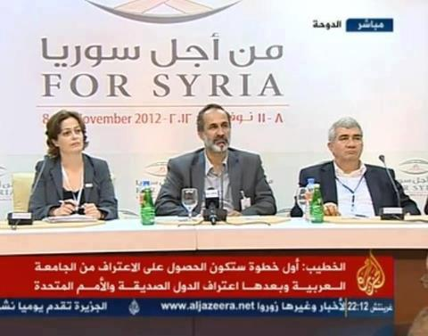
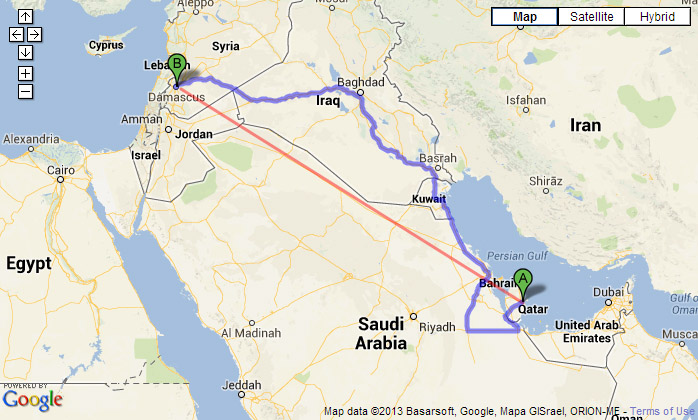
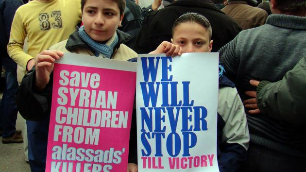
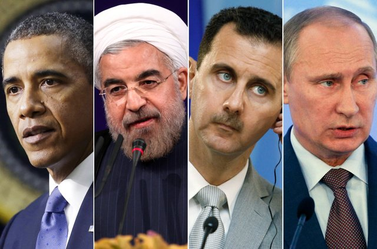

Saudi - Obama
This is interesting because on August 23rd, LiveLeak.com hosted an audio recording of a phone broadcast on Syrian TV between a terrorist affiliated with a Rebel militia in Hom Syria and a Saudi Arabian boss identified as Abdul Baseet. Their phone call indicated that rebels affliated terrotis in Syria (not the Syrian government) launched the chemical weapons attack in Del Bulba, in Hom Syria... one of 14 alleged chemical weapons attacks pinned on the Syrian government... yet all proven false. (is there other evidence Saudi would support? 50 billion in support and sunni vs shittie, and competition for oil pipeline through syria, iraq, iran, would would undercut qatari and saudi energy interests.
A highly controversial piece of information was published by a credible Minnesota-based news site called Mint Press News on August 29, 2013, the day before US Secretary of State John Kerry expressed "high confidence that the Syrian government carried out a chemical weapons attack."
Interviews were apparently conducted with doctors, Ghouta residents, rebel fighters and their families, where many believe that certain rebels received chemical weapons from Saudi Arabia that aided in the attack. (many people also argue the validity of this information since the journalist requested her name to be removed completely, but to learn more about it please visit here and be sure to read the comments section).
Here's the kicker, according to UK's Independent newspaper, it was prince Baudar's intelligence agency that first brought allegations of the use of sarin gas by the Syrian government to the attention of western allies in February. This is very suspicious, especially since prince Baudar and former US president Bush meet, so the obvious paralles with Iraq are being made by many.
Not to mention that Syrian Ambassador to Jordan Bahjat Suleiman has called prince Baudar "the real gang leader of terrorists fighting in Syria" claiming he leads Al-Qauda.
We know that these two predominately Sunni nations stand in sharp contrast to that of Lebanon, Syria, Iraq, and Iran... all of which are Shittie.
Former intelligence officer and one of the former senior directors of US Department of Defense Michael Maloof, discovered that Al-Qaeda had produced a “bench-scale” form of sarin in Iraq and then transferred it to Syria via Turkey and sent it to the Syrian branch of al-Qaeda, the al-Nusra Front. (http://nsnbc.me/2013/09/22/pentagon-al-qaeda-delivered-sarin-via-turkey/ )
the saudi agent behind barack obama - khalid almansour. Uncovered Muslim Brotherhood Documents could put Obama in prison. Obama spend millions to cover his past and birth certificates till this day. (video of obama bowing in 2009, and since bowed to other foriegners (although some suspect it's to cover for why he bowed for Saudi)
With Saudi blessings, the West and the Israelis are siding with Islamic terrorists to kill more Muslims in the Middle East!
The majority of people in the middle east believes Obama is a Muslim (even Libya's past president referred to him as "our son your excellency" twice), but most Americans believe he's christian.
4. The "Western" countries want to attack Syria because of the incentive given to Congress from lobbyists that are funded by bankers/corporations that are Jewish-Zionists in support of the state of Israel... since Syria and Iran are the last two main countries that are against Isreal and have the force to potentially expell the people out from Isreal. (so in reality, this is a relgious conflict of interest) (Neocons pushing to heavily attack Syria like they pushed with Iraq) This is why so many countries hate America, mainly due to their foreign policy, and namely thier involvedment int he middle East and with Israel.
Some of the largest military contractors that profit from war, also profit from runing some of the largest corporations, which then fund the media that also benefit from government funding. There is an absolute link between media and government... so really what we see is Wall Street and Washington propoganda to suit their needs.
Before his death, renowned attorney Percy Sutton revealed that Barack Obama had been sponsored and installed into the Harvard Law Review by a (then) mysterious individual, by the name of Khalid al Mansour. Mansour, it was later discovered, was none other than a front man for the world's second richest man, prince AlWalid of Saudi Arabia. Indeed, AlWalid had previously donated large sums of money to Harvard University to establish a "center for Islamic understanding." This is consistent with Khalid al Mansour's stated objective of the Islamization of the United States, Mansour himself being a vehement Islamic supremacist.
A further revelation came about when video was uncovered showing that al Mansour had been involved with Barack Obama (then known as Barry Soetoro) as a teenager in Hawaii. In fact, al Mansour ststes that it was his idea that Barry Soetoro should present himself as an "African American" (which he is not in the usual sense). This gave rise to the understanding that Barack Obama himself was little more then a puppet for the Saudi prince - whom notoriously he was later to show subordination to, by publically genuflecting (bowing) to a Saudi prince! (include video) Islmaic Supremascist paid Obama's law school.
This view is no doubt reinforced by the additional detail of the long-standing relationship, shown in this document.
Creative Commons license: Attribution-Noncommercial-No Derivative Works 3.0
Rather than further humanity goals and a responsibility to protect, American strikes will have advanced Saudi Arabia's top foreign policy goal according to The Wall Street Journal (maintaining Saudi-Israeli pipeline monopoly), defeating Syria with their Iranian and Hezbollah allies.
World Net Daily hosts a large number of YouTube videos of rebels handling chemical ordinates and alleged nerve gas missiles.
Assad had nothing to do with Sarin, which was provided by the pro Zionist Bandar Bush to the creeps, who poisoned kidnapped children from Latakia, as punishment for their parents who support the government.
2. The "Petrodollar" Crisis?
The US dollar, although it's the world's reserve, is not backed by gold. This means an unlimited amount may be printed, but the reverse-side of this means that hyper-inflation will exponentially grow. Why?
Becasue for every dollar that gets printed, the government or other banks now owe 1 + interest. The more that gets printed, the further the gap is between what is owed and what is physically in existence since interest grows expoentially. Plus the more dollars in circulation, the last valuable each one becomes. Less is more.
In fact, traditional economic models have predicted that the dollar was suppose to already collapse in 2009 and in 2011. In other words, the amount of money our government owes the Federal Reserve Bank (conglomerate of private global elites) would have become so astronomical that it's caused inflation on goods would completely destroy the economy. So why hasn't it?
It's because the debt has been forced to spread out across the world, for one single reason. The petrodollar. In other words, every oil producing country currently sells oil only with the US dollar. What does that mean for America?
It means if any country in the world wants energy, they have to trade goods with America in exchange for our dollars. This way, it will take much longer before the US dollar collapses. Albeit this will only work for so long.
But now there's immediate pressure. What if one country decides to sell oil with something else, like the Euro, and then other oil producing countries follow?
Well, that's exactly what has happened. In April 2013, Iran signed a deal to sell oil with Euros. Not only does sit on the third largest oil field in the world, they control the straight of Hummuz, which 25% of the world's oil and gas must pass through. The problem is if they decide to nationalize it, which they're done before to boost their own economy, it would cause America to greatly suffer as the would no longer have a monopoly on oil.
The powers that be (i.e. the heads of global banks and corporations) would no longer be able to stay on top if such a thing ever happened. And yes, they're willing to stay on top by any means necessary.
After FDR took America off of the Gold Standard in 1933, the Feeral Rsearve took ove rthe money manners.
Fiat money vs. commodity money.
The US Dollar, Euro and Japanese Yen are all fiat currencies because:
1) They are not legally convertible into anything else, such as being backed by gold or silver.
2) Therefore, the only value it has lies within the full faith and credibility of the government that issues it.
2) There is always more debt than physical money printed at any given time. Once the first $1 bill is printed, you now owe the bank $1 + interest. But that interest doesn't exist. This specific step which doesn't get talked about often is the very reason why the owners of the private bank (Federal Reserve), which controls printing US dollars (thus inflation) without any advising from the government. It's also known as a Ponzi Scheme, and is the most effective and ingenious way to become rich fast. Only problem is it will get you 150 years in prison, like with at the time 71 year old Bernard Madoff, prior Chairman of NASDAQ. In reality however, it is extremely rare for the rich elite to ever have to pay for their crimes (John Thain), so what happened with Madoff was he lost the support of his elite circle.
The problem with fiat currencies is governments can simply print more notes whenever they feel like it, causing them to quickly lose their values.
Federal reserve created over 2.3 trillion dollars from 2008-2013.
17 trillion and quickly growing debt.
This is why the US dollar will be the first of today's fiat currencies to collapse.
States are already losing faith in the dollar, individually making it legal to conduct trade with gold or silver.
To know what will happen, we just have to look at Zimbabwe. They're a recent example of a country with a fiat currency that has essentially made all of their outstanding notes worthless through hyperinflation.
If you had 100,000 Zimbabwean dollars sitting in your bank account, you would still be broke. The difference between total theoretical debt vs. existing printed money is astronomical. As will be the case very soon with America.
In fact, a number of economic models have already predicted the collapse of the dollar was suppose to have taken place during 2009 and 2011. So why hasn't it?
Most people don't think of it like this, but the richiest people in the world are obviously the people that loan money with interest to countries... and in America, those people created the IRS to collect thier loan back from the collective citizens of that country... but then they don't pay taxes themselves. They created the system, and they sit above it all.
After all if it were obvious that this was the cause, then it would be completely impossible for the US to obtain any international or domestic support.
Thats so true. The US is winding down. China is set to overtake Americas GDP in a few short years. This is inevitable. Meanwhile America fights wars into bankruptcy. All the political posturing is not unlike the final days of the Roman Empire. China on the other hand is rising, space dominance, huge nation building works. The 19th Century belonged to British Imperialism. The 20th Century saw the rise of the USA. Now the 21st Century acknowledges China's ascendancy and an Asian Era. Life goes on.
Iran no longer sells their oil in the Dollar, but now the Euro. They wish to reclaim their oil profits back from the US machine.
Russia and China Defense
Russia
Russia's Foreign Minister has been pushing the knowledge that Syria has agreed to have peace talks with the US, which is falling on deaf ears currently.
Only problem is asside from killing innocent people in Syria, Russia and possbility China too, will come to Syria's aid and protect them against US attacks. Iran has been providing aid, mostly in the form of guns/weapons, to the Syrian army.
On September 14 2013, Russia and the US reached an agreement (thanks to John Kerry accidentally coming up with a solution in an interview) to postpone a US attack if Assad gives up his chemical weapon stockpiles by mid-2014.
Putin made the point that if America does anything, they are all by themselves... meaning the British, Germans, and French aren't going to come to your aid.
In December of 2012, Putin signed a bill banning US adoptions of Russian children.
In May of 2013, Russia arrested a US diplomat and accused him of being a CIA spy... calling his actions "provocative and in spirit of the cold war."
In June of 2013, Putin publicly disapproves of US and EU actions to aid Syrian Rebels.
Russia vetoed 3 UN sec. council resolutions condemning Assad's government in Syria.
August 1st, Russia granted Edward Snowden (the former CIA and NSA employee who intentionally disclosed classified details of several top-secret United States and British government mass surveillance programs, like PRISM, to the press) temporary asylum less than 2 months after Obama and Putin met.
And if the US does chose to do something, Russia will give Syria, and possibly Iran as well, the state of the art air defense systems, which would make any attack on Syria or even Iran very difficult
In the UN vote, both Russia and China were the only countries that voted to blockade any type of international intervention / effort against Assad in Syria.
So now if the US does attack Syria, in order to "preserve its credibility to promote democracy," but it does not "deter" Assad from another chemical weapon attack, then Obama will be placed in the same position Lyndyn B. Johnson was in with Vietnam.
Omits the US has blocked many UN resolutions condemning Israel war crimes.
rumored that the violent outbreaks within the various Arab springs were a CIA invention, meaning agent provacators would be placed in certain locaitons to provoke violence.
Video "Expect all of it."
Revolution
the reality is that there is no such thing as free markets. They are all rigged, and run by self-interested cartels. The aim of all cartels is to enrich themselves as much as possible. The current economic crisis was caused by uncontrolled greed. The amount of money a small group of super rich individuals has amassed in the last thirty years is simply staggering, due to minimizing regulation and supervision of their activities, and to prevent the state interfering in anything they do.
They claimed they were being rewarded for magnificent performance. They said they were merely taking their fair share of the profits. No one objected.
Who stopped their greed machine? No one. Who complained? No one. Which governments intervened? None. Instead, these people were admired. In Britain, many were knighted by the Queen (a senior member of the OWO) and made peers in the "House of Lords". In America, governments turned to these people for advice and they were treated as great celebrities and masters of the universe.
A handful of people spoke out regarding various abuses and suspicious activities. They were ignored.
All of the fake profits of the OWO are now huge debts hanging around the necks of ordinary people that it will take generations to repay. Why have the people accepted their fate so quietly
The OWO have themselves been financially impacted by the crisis, but if their average wealth falls from 1 billion dollars to 500 million, to what extent have they really suffered? What part of their lifestyle is altered? But someone earning $50,000 dollars who loses their job has had their lifestyle 100% impacted for the worse, even though they have lost only a fraction of the losses of the OWO in monetary terms.
The Old World Order will now see the current crisis as a buying opportunity, with distressed sellers being forced to yield assets to them on the cheap, as happened in the aftermath of the Wall Street Crash. Thus, in a few years the OWO will be richer and more powerful than ever. The monopolization of the world becomes more focused. consolidate the power of the OWO.
No one argues with those who appear successful. No one asks awkward questions. Money flows to money. A few winners take it all. Everyone else stands by and watches, and applauds. And all the while disaster unfolds.
When greed is unchained, a boom results, followed by inevitable bust.
How many of the super rich have been jailed for wrecking the economy? How many have had their assets seized? The truth is that the power of the Old World Order could be shattered forever right now if the people demonstrated sufficient will. But they haven't and they won't.
Even now, in the midst of economic mayhem, few people have got real fire in their bellies. The Old World Order have nothing to fear at the present time. We see no signs of the widespread public discontent that needs to exist for us to make any headway against the OWO.
Also, by their skilful use of the democratic process, they have put a new face in the White House, thus removing the rage that would have been evident if Bush were still in power with years left to serve. With a single act, they have defused the bomb. Humanity must help themselves.
The only thing stopping people from bringing about radical change is themselves. Deep down, they are content to be pawns of the Old World Order. That is the supreme tragedy. If they didn't want to be pawns, they wouldn't be. Everyone has a choice. Most people choose the easy path, the road of least resistance, the one that requires no effort. If you always look to others, you're definitely "screwed".
Only if people are on the streets, demanding justice. No such circumstances exist now. The people are well and truly sedated.
The Bush family is the one of the most powerful OWO families. They did everything in their power to ensure that George W Bush, a person of severely limited ability, became the American President. The whole world suffered as a result. This is what happens when bloodlines are favoured over merit. The current financial crisis arises from the same source.
The resistance to merit, is the philosophy of the family.
What is the "philosophy" of the typical family?
1) To give their children the best possible chance in life.
2) To give their children, as far as possible, an advantage over the competition.
3) To keep the family safe, secure and in good health.
4) To give the family the finest things in life.
5) To resist anyone or anything that appears to harm the interests of the family.
6) To become as successful as possible, achieve the highest possible status, and enjoy the fruits of the "good life".
7) To pretend to be supportive of other families but, in practice, to do everything to support one's own family, regardless of whether it's at the expense of other families.
What is the philosophy of the Old World Order?
Exactly as above.
Be in no doubt - the OWO succeed because they are carrying out the actions that families everywhere endorse, where their own narrow interests are the only interests they really acknowledge, merely paying lip-service to any other interests. But anyone who follows this philosophy gets the world we have today. It's an entirely unproductive philosophy unless you are in the OWO. And it's also unproductive for the OWO because they put their immortal souls in extreme jeopardy because of the selfish lives they lead. But ordinary people are resistant to it. "My family right or wrong" is their mantra.
Freemasonry was intended by the Illuminati to allow the creation of enlightened meritocratic seeds all over the world that would, step-by-step, change the prevailing OWO philosophy. Instead, Freemasons soon succumbed to the same corrupt system as the OWO. They placed the interests of their fellow Freemasons - their new "family" - above those of everyone else. Before long, the OWO and Freemasonry had merged and now Freemasonry stands at the heart of the Old World Order.
The OWO's message is extremely seductive to many people, even to many of those who claim to revile the OWO.
radical message. Meritocracy can only come about in a world that has turned its back on greed.
Meritocracy means that harder-working, cleverer, more talented people rise to the top, and receive higher rewards than those below them, but - and here's the crucial point - those higher rewards are never excessive. Would you vote for a society that placed caps on what the most successful people were allowed to earn, and that blocked their ability to pass on their wealth to others?
The Scottish-born American Andrew Carnegie was a remarkable individual who came from humble origins to become the world's richest man. Despite his background, he was accepted by the OWO and became one of their most powerful figures. In his latter years, he realised the errors of his ways to some extent and chose to give away all of his money in various philanthropic undertakings. "The man who dies rich dies disgraced," he said. that principle was enshrined in law.
Dynastic families - the bedrock of the OWO - are created and sustained by the transmission of great wealth from privileged parents to privileged children. To stop the OWO, all that is needed is a law to prevent the transmission of excessive wealth. That wealth should be used instead to ensure that ordinary people are given the opportunity to make the most of themselves.
Yet, if people are really truthful, they will recognise that they don't want to curb greed. They dream of being fabulously wealthy like the members of the OWO. Despite all their talk, most people actually aspire to be part of the OWO. And that is why the OWO are winning.
People do not wish to recognize the greed within themselves - so it's much easier to hate others. If the ordinary person could be part of the OWO, he would be. What he resents is not getting that chance. What he ought to resent is the whole institution itself. Monarchy isn't wrong because we can't all be monarchs, but because it is an intrinsic evil that requires those beneath you to support your rule.
but actual change comes about only when the people will it, when they change themselves from within. only a radical change in their inner selves will allow them to escape the OWO's deadly Siren song.
After days of intense negotiations, Lavrov and Kerry announced an ambitious plan under which all chemical weapons in Syria would be opened up to international inspectors by November and destroyed by mid-2014. And Russian Defense minister has announced Moscow's willingness to assist with destroying Syria's chemical weapons arsenal if allowed by the international community.
US-Russia deal to destroy Syria's chemical weapons by mid-2014 was condemned as 'meaningless' and 'morally indefensible' by senior Republicans... claiming it will make us look weak to Iran. They want to push for a tougher response and sent more arms to the opposition groups.
The CIA’s mainstream media control program is named Operation Mockingbird because a mockingbird repeats what it hears. keeping the population dumbed down seems easy.
Main Street needs to rise above Wall Street.
Does Getting Rich Mean Giving Less?
"People should NOT fear their Government - Government SHOULD fear its people."
Of course this is followed by fear of a possible World War III scenario, where the US attacks Syria, Russia defends Syria as promised, and the US is forced into a position to go to war since "attacks" (false flag attacks) will continue until Syria and Iran are no more, so that Israel can be left alone. So it would be US and Israel against Syria, Russia, and Iran... that is until other allies join in. Russians deploy naval forces we match it. Odumbass launches and they intercept it. Someone makes a mistake of aggression and fires upon another warship. Russia promised milliatry backing for Syria if US strikes. China sends warships to coast of Syria to "observe the actions of US and Russian ships." Russia is one of Syria's biggest arms suppliers, followed by Iran, and then Hezzbola just has a common enemey with Syria.
US Army General, Martin Dempsey, weary of supporting strike.
They're talking about bombing a nation. Taking us into a war that will mostly likely spin out of control drawing in Iran, Russia, and China just based on their word.
Both Russia and China have openly sided with Syrian and Iran. And Russia has warned that nuclear war could result if the US continues down this path.
We're talking about World War III here! This is not a game.
This is by far the most dangerous crossroads we have ever come to.
If we let these psychopaths continue taking us down this path, the consequences are too horrific to even contemplate.
At this point there is not political solution that will turn the US government around. Voting the bums out is not going to work, because it is not the people in government that are the root of the problem here.
It's much worst. The direct root of the problem we can't touch through normal means, since they're un-elected and un-accounted for bankers and head of corporations.
The people are going to have to take the power that they're handed over to these madmen back, directly.
15,000 Russian troops are in the US maybe more now.
However, they can only do this as long as they have full control over the US military and this is htier achilles heel.
If you want to influence the outcome of this situtation, this is ultimately where you need to strike. As american citizens we have ascess to communicate with US military personel. We can write letters to soilderies, send them videos, post in military forums, and if you live in a town iwth a military base you can post posters and hand out flyers. If this is too much for you, then simply working to spread the message via facebook and twiter is an excellent start. Al lthis may seem like a long shot, but if even one high level officer speaks out against the plans to go to war with Iran, it can have a ripple effect that prevents this form moving forward.
And guess what, the commander and chief.
Even if you just pass this information to non-mlitary people, you increase the chances that this information will reach someone who does know someone. Regardless of our chances we have to try. A lot of innocnet people are going to die if we fail. Sitting back and doing nothing, especially after you've just read this far is morally unacceptable. We all now share a responsiblity to spread this informatoin as far and wide as possible until it falls upon enough ears, and the correct people become informed.
Total anarchy is a horible thing. We need government, just have to set up ways to prevent corruption.
If not anything else, we can learn from this so far that violent revolution to this extent will never be able to truly bring the results desired. Making the "cure" worst than the "disease" it was trying to rid.
The first stage of the revolution is the ideological revioloution. There needs to be a huge paradigm shift taking place, and it's already begun.
People are waking up all over the world, despite not hearing about it through the mainstream media.
The goal is to build networkds of awareness.
The truth is the "Syria Conflict" is not about an internal Civil War, despite what main stream media claims.
While it is of course true that a large percentage of Syrians do want political reform for the following reasons:
It's instead more accurate to say that Syria is in a war against foreign backed terrorists posing as Syrian civilians.
The official Chinese news agency, Xinhua, said Tuesday that the U.S. was rushing to conclusions about the use of chemical weapons in Syria before the UN has completed its investigation.
The U.S. is preparing for “three days” of missile strikes against
The media is staged to convince the "Western" countries' citizens of the "official" story.
Some critics have accused Western governments and media, including those of France, the United Kingdom, and the United States, of hypocrisy in the way they have reacted to the Arab Spring.
Professor Noam Chomsky (a world famous teacher and commentator on foreign policies) accused the Obama administration of endeavoring to muffle the revolutionary wave and stifle popular democratization efforts in the Middle East. To see more of him, please click here.
Andy Rooney said: “Did you ever notice that there is no law prohibiting media networks that supports a political agenda from lying to millions of people. But there is a law prohibiting a person from lying to the police? Why is that? I don’t know about you but it kind of reminds me of Nazi Germany” As soon as I read this drivel I thought of what Mr. Rooney had said – this is a perfect example of supporting a political agenda.
"Republican vs Democrat" is a lie designed to distract you from the fact that both parties are brimming with utter bullshit. It is the equivalent of how for many people throughout history, religion divides.. today these are the so-called "state-relgions."
2. The rebels themselves were paid and their chemical weapons were funded by the same "Western" countries to attack innocent Syrian citizens (which was blamed on the Syrian government, which they denied doing), which would create international attention and a situation that would justify the same "Western" countries to enter Syria. Stronger political gain, than the small military gain granted this as a logical decision.
Is the United States genuinely considered about chemical weapons being used inside Syria, or is there something else at play here?
One has to wonder, because the US certainly had no problem selling plenty of chemcal weapons to Sadam Hussein.
We don't hear any calls from our Secretary of State or President for these crimals to be prosecuted in the legal sense in an internation crimnal court to be put on trial.
We are certainly not under direct physical threat, meaning there are mutlple opportunites to address this diplomatically.
Our government just canceled a planned peace talk with Russia.
Campaign Obama was very against unilateral action. He believed you would have to advise with congress, the un. Now he doesn't care.
Arming rebels for the past couple of years.
Countless children had their limbs melted off by white phosohprous in Gaza, that the US used to attack with, despite this specific A chemcial weapon that is under international law illegal to use on civilians.
The worst example of a chemical weapons attack that will have a lasting effect for millions of years, was in Philousa, Iraq, when the US used of very large amounts of depleted uranium tipped bombs.
In fact doctors have ordered all the women affected in these areas to not even have chlidren anymore, since the maount of birth defects would be so horific.
We don't even have to mention about Japan.
So how could the US gov possibly feign the use of chemical weapons against civlians when they themselves are the biggest purpotratiors and the biggest fund raisers of htese kinds of autracities.
You know what John Kerry's no doubt that there's evidence was... common sense.
It all seems pretty ridiculous... why would Assad use chemical weapons at the very moment UN chemcial weapons inspectors entered Syria to investigate Allepo from the March attack (which is not far at all from Damascus), kind of interesting timing there. And at a time when they were decisively winning the war with conventional weapons?
Why would they give this gift to the US propaganda machine?
The rebels cannot accopmlish their objective at this point without foreign military intervention.
We've been flooding in with massive funds and weapons over the past few years.
This war has been kept going and happened because of US intervention, and now it's turning into an all out war between mutlple nations.
We do not know for sure without any doubt which side used the weapons because there has not been a UN investigation, like there was one in Aleppo in March that already showed the rebels most likely used the chemcial weapons there.
And we're not calling for one, instead we're calling for a mliiltary attack and rejecting the UN to allow investigators to stay, which would "prolong" the attack.
What's funny is that John Kerry was highly upset about the indiscriminate killing, and yet he served in Vietnam, so if anyone would know about indiscriminate killing it would be him.
And he presented no proof.
One has to wonder if this is the same man that returned from Vietnman and denounced US war crimes and stood with winter soilders and thier testimonies... or is this just another political operative?
The US is not calling for "boots on the ground," and at this stage atleast for only crusie missles or drone attacks.
It's a very weird half intervention, and when you look at just recent history when we did something similar in Afghanistan and Iraq, it didn't work out too well for us, if anything it caused more hostility towards the US and these "evil" dictators took it out on their own civilians. And there is no way to tell if civlians are going to suffer as a result from these strikes, you don't even know if you're going to target or get the right people.
So for payback on using chemicla weapons, we're going to blow some people up... that should even things out. No american lives will be lost, and just the lives of people we don't have to see will be... that's typically the perfered method of warfare.
The Iraq war was an example. And one of hte things that came out of it, which many people aren't aware of, is the "Downing Street Memo," which was a classifed British 2002 document revealing hte Bush administration's determination to go to war in Iraq even without evidence of Iraqi Weapons of Mass Destruciton. This showed that when there is an objective it will take place no matter what. And the one here is to overthrow the gov in Syria and install a puppet regime that will follow the dictates of Washington and Wall street. The US gov and it's allies in the UN fix intellgience around the objective. So they start with the objective and then create a narrative around it, fixing the intellgience to what they want to accomplish. That's what's happened before, and is happening yet again.
But we are under direct economic threat, which may be just as bad.
In June 25, 2013 - "CIA aims to vet and train fighters with new weapons for deployment by August; Saudi Antiaircraft Missiles Expected."
Why we should bomb Syria?
If the US bombs Syria, they would force the hand of Iran (who has a mutual pack agreement with Syria) to enter into the war... giving us a reason to then attack them and dismantle their government to replace it with a puppet government that will not attempt to sell their oil for anything other than the world's reserve, being the US dollar... since that would cause a chain reaction of OPEC countries to follow suit. So we have to intimitate them desperatly with our last defense which is brute force.
The reason it would be so dangerious is becouse the US dollar is currently only back by oil (the petro-dollar), otherwise it's not backed by precious metals like gold (since 1934) which it last was until we went to the Vietnam war and the Federal reserve whent aout of control printing money. So without oil, it's based on empty debt, and is noting more than the laregest scale ponzi scheme imaginable.
With the US losing value, the US economy would shortly collpase afterward and this civlization would no longer be able to continue... so at best we could prolong it, until some things of a better solution... which there are, but the people currenlty in charge of the majority of the money woulnd't like it since they would no longer be able to garentee thier empire to thier children.
Iran is currently sitting on the third largest oil reserves, and they control the straight of Hormuz, which is the world's largest energy bridge, 17 million barrels of oil pass through it everyday.And becasue Iran annouced that it's no longer bowing down to the US and NATO.
Iran already sent 4,000 troops to aid Syria president in June of 2013.
Russia sent advanced anti-aircaft missles and positioning atleast 12 Warships into the Mediterian off the coast of Syria (which haven't been there since the cold war) to protect Syria from Israel and US. and
US is suppose to officilally withdraw therir troops stationed in Afgahstina in 2014. But private miliatary defense contractors (such as black water) are aslo being brought in to replace them. Also there are no plans to discontinue the drone program in afganstian anytime soon.
The iraq war is supposedly over, but overt means are quicly being replaced by covert means... as the CIA is increasing thier operations in Iraq, according to an article publshed Mar. 12, 2013. Which has one of its largest stations in Bagdag, thier capital.
Obama has expanded Bush's drone program, (waging secret drone campaigns against) into , Yemen, Somalia, Alegria, libia, and pakistan. (two more).Afgansitan
Obama toppled the Libian gov. in 2011.
The US has been running intesive war games (flying stealth bombers over South Korea in warning to North. since Feburary ,and have been on-going in spite the lack of media attention.
North Korea is calling these drills which include simulated nucleur strikes and naval manuverous "want and provocations for manuveours in war."
This really isn't an exaceration since the US just recently signed a mutual defsne pact with South Korea in March, 2013.
North Korea is will to help Syria.
The US has pusshed for mutlple rounds of sancutaitons against Iran supposdely to discourage them from building a nuke, even thought the CIA and Mossad agree Iranian leadership hasn't even made the decision to build a nuclear weapon, much less even start.
US and Israeli governments aren't ones to let pesky little things lke facts to keep them from promoting millitary strikes on Iran. But since they haven't gotten much traction from this approach with the international community, they moved on to less direct tactics.
And that brings us to Syria... Iran's closest ally is Syria. And on Friday May 3rd, 2013 Israel striked Syria, claiming they were targeting Hezobollah arms). This was just after they're attempt to frame Syria for using chemical weapons, "probably sarin." April 23, 2013, but this plan fell apart with zero substantial evidence.
UK and Qatari plot agasint Syria was even revealed.
UN's Del Ponte says evidence Syria rebesl "used sarin."
The US has been helping with material suport for hte Syria rebels, although they don't speak about it publicily.
On May 26, 2013 Lebonon was attacked by missles by NATO backed insurgens due to Hazebollah's support for the Syrian government.
Russia has taken a firm stand against hte US, NATO, and Israeli attempts to topple the Syrian government and is still (warning the conflict may go nucleur if pushed) And gave anti aricraft missles, etc.
And as a response Israel's president, Net mayahoo, reportedly warned Moscow's sale could push the Middle East into war, and argued they could be used irresponsibly internally to kill the rebel groups and civilians. This statement was made around the time of the un-provocated Israeli air strikes on Damascus in May 2013, leads little doubt as to what these missles Syria now has were intended for and why Israel is angry. Of course Israel doesn't like this, and wants to contiue attacking Syria with impunity, without any conspqeuenses.
Russia sent warshps to counter the us naval presence that ubild up over hte past several years.
China, Russia, Iran, North Korea, Syria, Brazil, Ecuador, Venezuala, (Handful of nations in south america based on economic ties) etc.
US, Isreale, NATO (most of western europe), Qatar, Saudi Arabia, etc. (middle east allies)
Clearly the most powerful nations in the world are involved here.
Proxy war has already been underway in Syria and IRan.. not to mention CIA agent caught in Russia.
Currency war is already underway with the US and China. (China, Russia quit dollar)
It's highly unlikely that the US and it's allies will back down.
Basically if we don't stop Iran we will go bankrupt, and that will inveibtaly cuase a WWIII, so the options are WWIII or meet finacial decay now instead of later when the plan is to switch out US dollar for a global currecy.. in which case the same game would be played with valuless money, but it would go unchanlledged by other currencies. The current sititon we expirnece would repeat until something different happens. depriciating value of money woudl go on with the same people in charge.They're in teh business of ponzi schemes. Every coutnry on the planet would be forced to owe the federal reserve money, which is already for the most part the case.
This war is a war for the control of the global financial system. The dollar is nearing the end of its days, and the powers that be know this. They could let the dollar fall and allow the rest of the world to choose thier own course, but they don't want to. The powers that be would much rather take a gamble and stake it all on an attempt to control the currency that wil replace the dollar. If they have it thier way, this new currecy would be a turly global currency. (Evelyn Rothschild rare interview).
This global currency would be accompied by a global government, which they will claim is necessary to prevent another tragic war like the one they're setting off right now. (Security and fear of the future v.s. freedom now). The Vatican even said that we need to move towards a system of world government or "world authority" to crack down on capitalism in parellel suport to what the Occupy Wall street pretesters were anger about. back in October 2011.
A classic problem, reaciton, solution scheme. Where those that create the problem, manipulate the public into accepting a solution that puts more power in their hands.
They're going to attempt this one way or another, if they don't then they will lose everything. The question is how will we respond. Will you fall for this?
Will you send your sons and duaghters to fight in these corrupt wars with your eyes closed and your hand on your heart, or will you atleast speak out?
This is the real varioable that will determine the final outcome.
If you appreciate this message, and want others to hear it you can help by sending a personal email to your friends via email.
If you'd like more articles like this, updates, and bonus content, and to influence future articles sign up.
Which was predicted to collapse in 2009 and 2011, based off of looking at stock prices, etc.
The US and thier allies have become very adpet at toppliing goverments and installing pupets to do thier bidding. The first documented example of this was the US and British backed cou of 1953, under president Dwight D Eisenhower, to remove the deomcratically elected prime minister, Mohamed Mosadect, from power in Iran after he nationalize Iran's oil fields... and installed Basha in his placed. Basad of course promtly let hte US and British oil companies back in. Just one little problem, he ruled as a dictator and was very unpopular. The iranian people don't really like being ruled by pupets, so they overthrew Basahd in 1979 during hte Irain revlolustion. The government meant to replace him was the crazy idea that Iranians should run Iran, and America shoudl mind thier own business.
Of coures for Washington, this is unacceptable, especially since approximately 20% of the world's oil travels through the straight of Hormuz and Iran itself is sitting on the third largest oil reserves. So the US has been trying to find a way to get a regime change in Iran for some time now. For many years the focus has been on bulidng up a trumped up case against Iran's nucleur energy program, claiming that they're working on building a bomb. This hasn't gotten much traciton internationally or domestalcly, largly due to the fact that the US gov no longer has crediblity on these types of issues. You can only cry wolf about WMP so many times.
Furthermore, both the cia and mossad had come forth stating that Iran hasn't even made .
so washington was forced to take a more indirect route to get to Iran. Syria is Iran's ally.
Been arming syrian rebles covertly for some time, and recently they've been doing it openly.
Iran has responded by sending troops to Syrian. Russia and China have taken Syria's side.
Now blieeve it or not, this crisis in Syria relates directly to the situation in Egypt. But in order to see how, we have to take a step back.
Former pres of Egypt, was widely viewed as an american pupet. He assied US in 1991, during the Gulf War, and in return America, the arab states of the persian gulf, and Eurpoe forgave Egypt by about 20 billion in debt.
This was conection to the US was reinforced by the fact that while he was in power, Egypt was the second largest recipent of US foreign aid. Israel being the largest recipen of course.
Although he protected US interests for many years, in the final decade of his rule, he began to pull back on several key issues. Among these were his refusal to send troops to Iraq for the 2003 invasion, and his rjection of the US nuclear weapons umbrella of 2009.
And since the US doens't like it when their puppets pull back, they've since been covertly funding opposition groups to take Muraetk out from office.
This effort culminated in the uprising of 2011. This doesn't mean that the uprising or the emotions driving it was fake. The us just chanled that energy to get the change they desired.
After Muraek fell, the egyptian people didn't choose hte next leader... it was thier military, which took orders from the US to choose Morsi.
Many people wree fooled by this political slide of hand, becaue many believed that murake was the root of the problem. And the illusion of change temperaly eased the public's discontempt.
This technique isn't new or novel in anyway.. in fact it's the standar mechanism of control in so-called western democracies. New pupets are ushered in periodically trhough elections, while the true rulling class remains unchanged and still unaccoutnable for thier actions. That's the benefit of using a figure head, they're disposable while giving the people the illusion of freedom. just look at the US.
And while morrissey and the muslim brotherhood probably had their own agenda they wanted to do, the price they paid for their installment was their pledge of support for the u_s_ campaigning in syria.
Eygptian leader stuns Iran with plea to back Syrian rebels.
However the eyugpitan people began to catch on quickly, and didn't particlulalyr wnat thier conty to be a vassel for the US, nor did they like the direction Massi was taking Eygpt domenstically.
So they rose up and took to the streets in record numbers. The protest in July of 2013 was the largest in recorded history. 30 Million people showed up. This number was especially astounding since egypt only has a poulution of 82 million.. so almost half came. (came to protest against the muslim brotherhood while at it's most the protesters were not more than half million)
this was a true popular uprising, and it was fulley capable of toppling the more
regime by itself without the assistance of the military. The only way for the US to avoid this from happening and losing complete control of the sistuation in Eygpt was to have the military interviene premtively and remove morsi from power. By doing so the mlitary was once agin in postion to control the transition, and threrefore influence the replacement.
The real source of Washington's influence for doing all of this is positioned within the Egytian mliitary. And the militry hasn't lost any power in this crisis, in fact they've gained power since it was widely interpreted as a sign that they were
allied with the people. Everyone seems to have forgotten that it was the military who put morsi in power in the first place. HE was theri pick, And now the new pick is Mohamed Elbaradei.
And while there is doubt about his conections to the western powers, his supporters campiegin tries to dispell them, but his resume speaks for itself. In the end he became vice president. WHo is in suport of a 4.8 billion dollar IMF loan for thier coutnry, which is the trojan horse for the US to control other coutnries. (just google confessions of tan economic hitman to learn how world loans are used as a weapon).
Details are chanign by the minute in Egypt, as the people are informed through the internet now-a-days. So maybe someone else without public records conencting him with the US and Nato will take his place soon.
1952-1970 was Egypti's best economic model for the majority of Egypitians, wiht the fastest rise in living statndards for oridinarly people. Masta was a great leader for ordinary people in Egypt. It needs to break policies of the murai and washington error.
Morsi made the mistake of saying that the 9-11 attack on America was not as it seemed. Israel and American shadow agencies of Mossad and CIA could not allow this to be out.
even morsi protesters were 1 million in count. protesters against were 14-30 million by different estimates. 22 million signed against morsi. so i guess you were reading the wrong propaganda.
But don't be mistaken, the western powers will not just stand by and let Egypt shcoise it's own course. The control fo the Suez canal and the Suez pipline is too important.
US, Israel & Russia love assad, that's why his family hold power in syria for so long although they from minority.Syrian ppl are fed up with the regime,US & israel just want to butt in then install another puppet.
the obama no way in hell wanted Muslim Brotherhood in power that is why he did not give MB any money. MB are the good guys the military in egypt is the bad guys,
The only real issue is the power of the USA army. Even if the Egyptians were to clean their lines, it would only drive the USA army into their country by force, as happened with other countries.
The real problem is the structure of force and not the representatives!
Let's stop calling them main stream media but they are state sposored faked news outlets:
They are CNN,ABC,NBC,CBS,FOX,Yahoo, these guys just listed are news outlets but they are propaganda machine, trying to make people across the globe hate each others.
They are state sponsored faked news outlets.
We have more oil and gas here in the US, why don't we just drill and be energy independent, wouldn't that be easier
The US is EXTREMELY scared that this will happen in America. That's why you have not seen this on your local news.
NDAA in 2013 signed that it's okay for military to arrest anyone anywhere for an indefinite time without any trial.
Expanded drone program killing thousands of civilian non-combatants in countries we're not even at war with. There was no talk of impeachment, even after Obama was revealed to have his own private "kill list" and that he claims the right to assisinate people on that list without trail, with drones... even if they're US citizens on US soil "hypothetically," if he decides they're a "threat."
No fillibuster there, although there's one for Obmama's signuature healthcare... when in reality that exists currently as a public relations stunt designed to further divide left and right wingists. Afterall, a divided people can never truly acomplish anything. Plus it creates a nice little convient distraction to get attention away from their forign policy that's litterally killing thousands of people, all while continuitng to ensalve the American people to debts they will never be able to pay off. It's impossible to see any of this as okay.
US is a governemnt that operates without limits, which proclaims the right to arrest, torture, and kill anyone anyway with no warrents, trial, or due process.
5. The absolute attitude to take is one that we can do nothing about it.
Theodore Roosevelt "In any moment of decision, the best thing you can do is the right thing, the next best thing is the wrong thing, and the worst thing you can do is nothing".
Best call now wouldl be for us to call and tell the 535 voting members of Congress (that have a 90% chance historically of being re-elected) that each individual will lose our vote if they vote for war. After calling, please share in the comments that you did to help inspire others reading this to take action as well!
STOP FOCUSING on Syria !!!!!!!!!!!!!!!!!!!! get back to this country , get to work on DETRIOT , start fixing the 17% African American youth unemployment problem in some of our nations major cities , Let the Syrians take care of the Syrians , and if that means they destroy themselves , then so be it.
|
 National Coalition for Syrian Revolutionary and Opposition Forces - founded November 2012, curiously in Doha, Qatar (over 1,000 miles away from Syria, which as a country is quietly supporting a U.S. strike in Syria) ... (President of the party is center, with both co-vice Presidents on either side)  |
|
 |
In this scenario, if everything is as it appears so far -- that Syrian citizens have violently revolted and that President Bashar Assad commissioned a chemical weapons attack against his own people out of fear from losing control of his country -- then the best call for us would be to get President Obama (USA) and President Rouhani (Iran) to sit down and talk in order to create an alliance to figure out a peaceful way to help protect the Syrian people from their government/military.

President Barack Obama, from left, Iranian President Hasan Rouhani, Syrian President Bashar Assad, and Russian President Vladimir Putin may meet this week at the UN. It would be the first meeting of American and Iranian leaders since Iran’s Islamic revolution and the hostage crisis that coincided with it in 1979.